Router Hardware
What Do Routers Do?
A router runs some routing protocol to populate the forwarding table.
Then, when a packet comes in, the router looks at its destination IP and uses the forwarding table to select a link to forward the packet along. Remember, the forwarding table could contain ranges of addresses.
So far, we’ve drawn routers as boxes on a diagram. In reality, a router is a specialized computer optimized for performing routing and forwarding tasks. In this section, we’ll explore the hardware inside routers.
Where Are Routers?
In real life, homes and offices have small routers to connect hosts to the Internet. Where do all these routers all connect to each other?
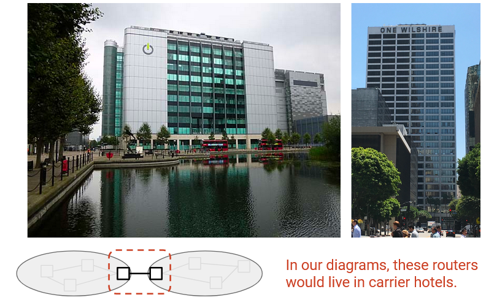
Colocation facilities or carrier hotels are buildings where multiple ISPs install routers to connect to each other. These buildings are specially designed to have power and cooling infrastructure, and ISPs can rent space to install routers and connect them to other routers in the same building.
Inside a carrier hotel, routers are stacked together into racks (6-7 feet tall, 19 inches wide).
Router Sizes and Capacities
Routers come in all sizes, depending on the user requirements. Home routers only forward traffic for a few users, and the forwarding table has a single default entry. Industrial routers might need to forward traffic from thousands of customers, with a huge forwarding table.
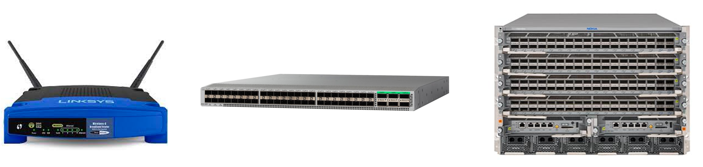
There are different ways we can measure the size of a router. We could consider its physical size, the number of physical ports it has, and its bandwidth.
We can measure a router’s capacity as the number of physical ports, multiplied by the bandwidth of each physical port. The speed or bandwidth of a physical port is often called its line rate.
Not all physical ports need to have the same line rate. For example, a modern home router might have 4 physical ports that can send at 100 Mbps, and 1 physical port that can send at 1 Gbps. The total capacity of this router is 1.4 Gbps.
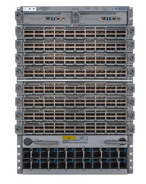
A modern state-of-the-art router used by ISPs might have a line rate of up to 400 Gbps per physical port.
This router contains multiple removable line cards, where each line card contains a set of physical ports. A modern router might have 8 line cards, with 36 physical ports per line card, for a total of 288 physical ports.
288 physical ports, each with 400 Gbps bandwidth, gives our router a total capacity of 115.2 Tbps.
This router could cost upwards of $1 million. Breaking up a router into line cards allows us to install more line cards as more capacity is needed.
In the future, next-generation routers will have 800 Gbps physical ports. Physical space for routers is constrained, so modern improvements are focused on improving the speed per port, instead of increasing the number of ports. (Stuffing more ports into the same space is also difficult because of power and cooling constraints.)
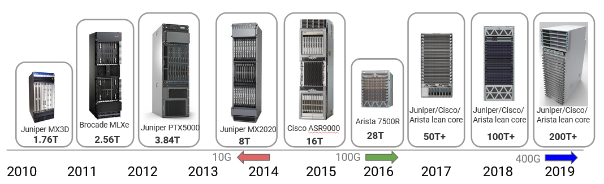
Router capacity has increased over the years in response to the growth in user demand (e.g. video quality has increased from 720p to 8K = 8000p). In 2010, state-of-the-art routers had 1.7 Tbps capacity, and that’s increased by a factor of 100 in the past decade. Much of this improvement came from increasing the link speed, from 10 Gbps in 2010 to 100 Gbps around 2016 to 400 Gbps today. These improvements are starting to slow down because of constraints like Moore’s law slowing and physical challenges with sending signals at high rate. The next improvement to 800 Gbps is only a 2x increase (compared to the earlier 10x and 4x increases).
Data, Control, Management Planes
The hardware and software components of the router can conceptually be split into three planes. The data plane is mainly responsible for forwarding packets. The data plane is used every time a packet arrives and needs to be forwarded. The data plane operates locally, without coordinating with other routers.
The control plane is mainly responsible for communicating with other routers and running routing protocols. The result of those routing protocols (e.g. the forwarding table) can then be used by the data plane. The control plane is used every time the topology of the network changes (e.g. when links are added or removed).
Because the data plane and control plane operate at different time scales, and are running different protocols, the hardware and software of a router are optimized for different tasks. In practice, packets arrive much more frequently than the network topology changing. Therefore, the data plane is optimized for performing very simple tasks (table lookup and forwarding) very quickly. By contrast, the control plane is optimized for more complex tasks (re-computing paths in the network).
The management plane is used to tell routers what to do, and see what they are doing. Systems and humans interact with the management plane to configure and monitor the router. This is where operators can configure the device functionality. What costs should be assigned to each link? What routing protocol should be run? These need to be manually decided by the operator.
In addition to configuration, the management plane also provides monitoring tools. How much traffic is being carried over each link? Has any physical component of the router failed? This information can be relayed back to the operator.
The management plane is the main place where operators access and interact with the router from outside the device. If the operator is using some piece of code to interact with the router, we usually consider that part of the management plane as well.
The data plane and control plane operate in real-time, receiving and processing packets on the order of nanoseconds (data) and seconds (control). By contrast, the management plane works on the order of tens to hundreds of seconds. If the operator changes a configuration, the router might spend time performing validation checks and processing the configuration before fully applying the update.
The network management system (NMS) is some piece of software run by the operator to interact with the routers. This software computes a network configuration (maybe with the help of manual operator input), and then applies that configuration to the routers. The router publishes some API that the system can use to talk to the router.
The network management system also allows telemetry (statistics and running state) to be read from routers.
The complexity of the network management system depends on what the operator is trying to achieve.
All three planes are needed to run a router. If we only had the data plane and no control plane, we could forward packets, but we wouldn’t know where to forward them.
What’s Inside a Router?
We defined a router as a computer that performs routing tasks, but in reality, inside the router, there are many smaller computers (e.g. CPUs, specialized chips) that work together to perfom routing tasks.
The physical shelf that makes up an industrial-size router is called a chassis. Inside the chassis, we install many line cards, and we have several physical ports on each line card. Each physical port can be used for either input or output.
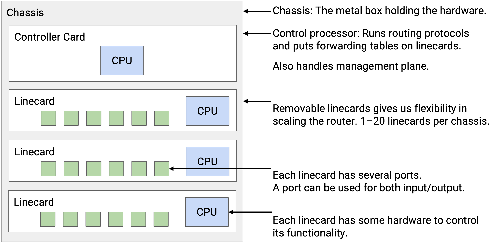
Every physical port has to be connected to every other physical port in the router (both in the same linecard and other linecards). You might receive a packet through one port, and need to forward it out of a port on a different linecard.
It would be pretty inefficient to physically wire each port to every other port. Instead, we have a fabric of wires to connect linecards together. Each linecard also has chips to facilitate connections to the fabric.
Separate from all the linecards, we have a controller card with its own CPU, which talks with other routers to perform routing protocols. After running some algorithm to compute paths, the controller programs the forwarding chips with the correct forwarding table entries.
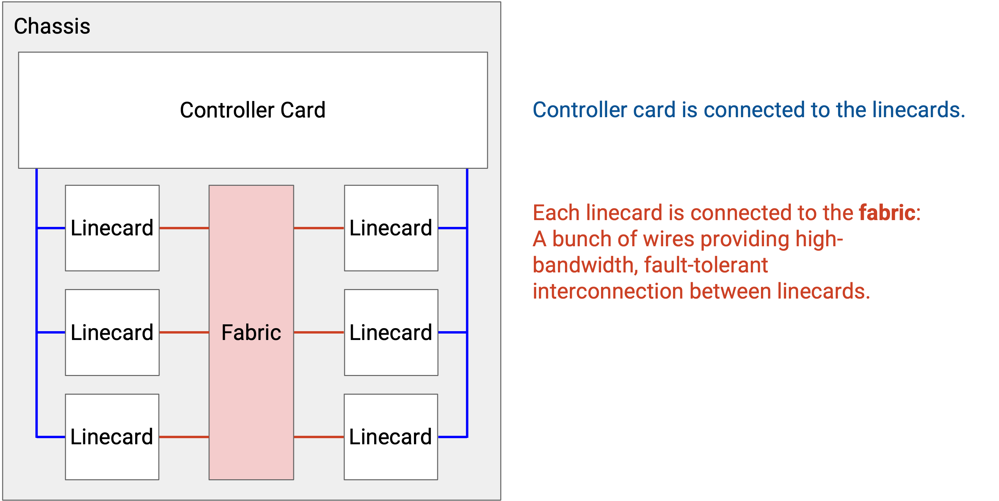
Each linecard has its own local CPU to control linecard functions (e.g. populate the forwarding table). The linecard also has hardware for basic processing of packets (e.g. updating its TTL before sending it out). The linecard contains one or more chips specifically optimized for forwarding.
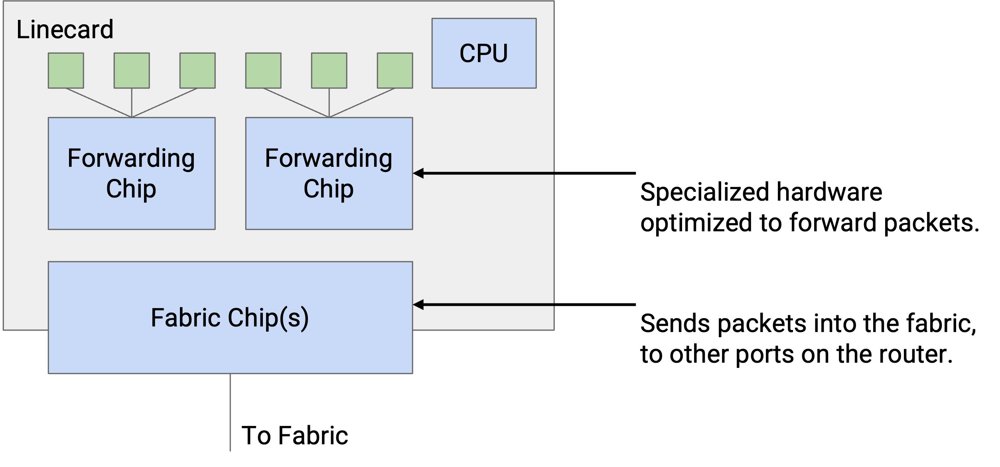
We can also categorize the router components by the different planes. The data plane is supported by forwarding chips on linecards, the fabric connecting linecards, and the fabric chips connecting the linecards to the fabric. The control plane and management plane are supported by the controller card.
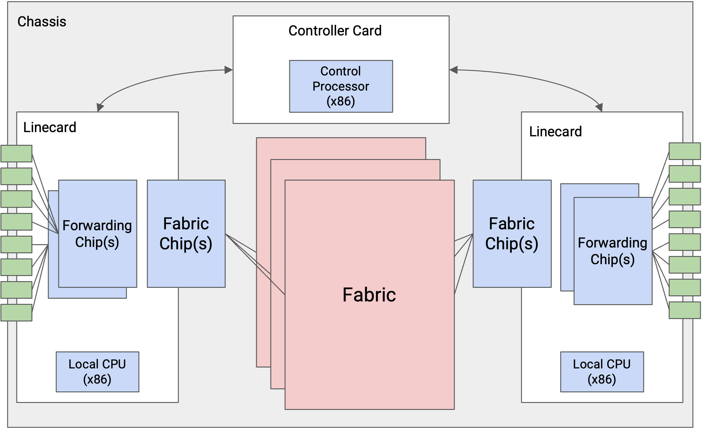
Here’s a picture of an industrial router. This router has 6 slots, where 4 of them have line cards, and the other 2 have controller cards. There’s also a fan tray for cooling. The fabric connecting linecards is in the back (not pictured).
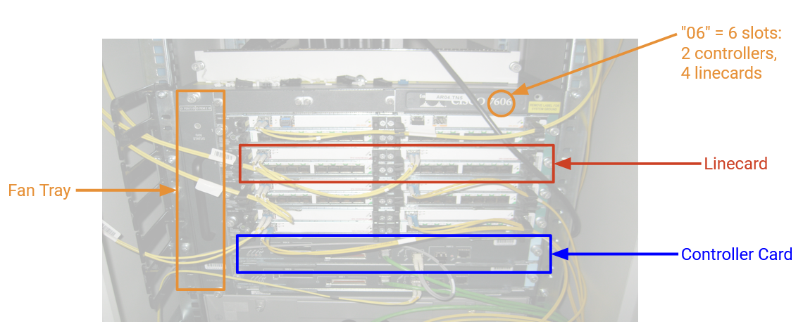
Types of Packets
The most common packet is a user packet, containing data from an end host. When the router receives this packet, the forwarding chip first reads the destination field in the header and looks up the appropriate port. If that port is on a different linecard, the packet is sent through the fabric to the appropriate linecard. Once the packet reaches the correct linecard, the packet is sent along the appropriate port.
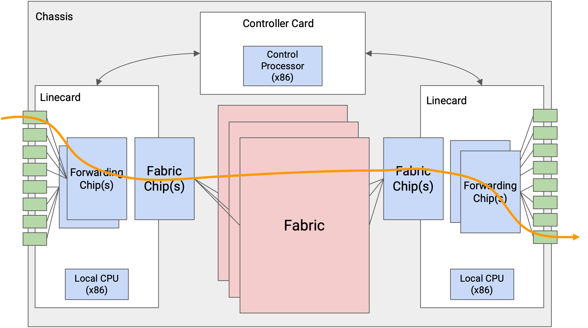
Some packets are control-plane traffic, which are destined for the router itself. In particular, when we run routing protocols, advertisements are sent to the router itself. When the router receives this packet, the forwarding chip sends the packet up to the controller card. The CPU on the controller card processes the packet accordingly.
The last type of traffic is punt traffic. These are user packets, but they require some additional special processing. For example, if we receive a packet with a TTL of 1, the packet has expired, and we shouldn’t forward it. We might also need to send an error message back to the sender. When the router receives a punt packet, the forwarding chip “punts” the packet to the controller card for special processing.
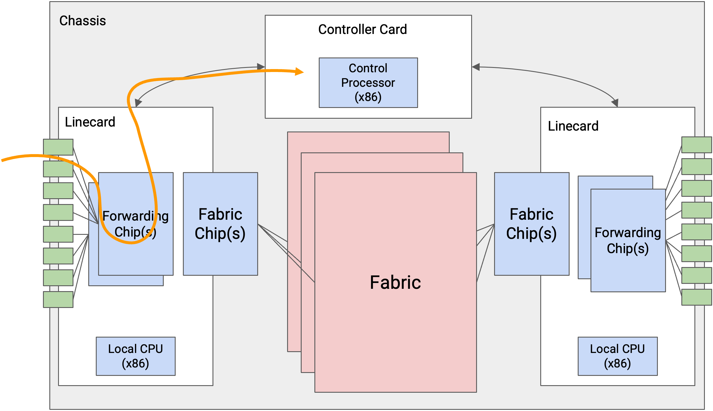
Scaling Routers
Why is our router broken down into this specific architecture, with forwarding chips and controller cards? Couldn’t we run everything on a general-purpose CPU?
The problem is, state-of-the-art routers need to run at enormous scale. At modern speeds of 400 Gbps per second, and assuming 64-byte packets, we have to process 781 million packets per second, per port. Across 36 ports, the entire router has to process 56 billion packets per second. (In practice, the numbers might be slightly lower if some packets are larger.)
This scale is not achievable in software on a general-purpose CPU. To get a sense of scale, if we tried writing a program for forwarding packets, and we ran that program on a CPU, it would be pretty impressive if we could forward one packet every 10 microseconds = 0.00001 seconds. A state-of-the-art router needs to process one packet roughly every 10 nanoseconds = 0.00000001 seconds. Even the most optimized software cannot process packets at this scale. Instead, we need to implement router functionality directly on hardware.
By splitting the router into specialized data plane linecards and control plane controller cards, we create a fast path and slow path. The fast path only involves forwarding hardware and is optimized for forwarding packets at very high rate. The slow path with the control CPU is only used when necessary, and most packets are sent through the fast path. These specialized components make routers much more efficient (uses less power, cheaper, uses less physical space).
Linecard Functionality
What specific tasks does a linecard need to do when it receives a packet?
First, the linecard needs to take the signal (e.g. optical, electrical) and decode this signal into ones and zeros that make up the packet. This is the PHY part of the linecard, which handles the physical layer (Layer 1) functionality.
Once we have a sequence of ones and zeros, we have to read those bits and parse them (e.g. find out which bits correspond to the IP header). We might also have to perform other link-layer operations (e.g. if a link is connected to more than 2 machines). The MAC part of the linecard handles the link layer functionality (Layer 2).
Now that we have an IP packet, we have to parse the packet. For example, we need to check if the packet is IPv4 or IPv6. Then, we have to read the destination address and perform a lookup for forwarding (or discover that we need to punt the packet).
We may also need to update various IP header fields. We have to decrease the TTL. Since we updated the header, we also need to update the checksum in the header. We might also need to update other fields like options and fragment (discussed in more detail in the IP header section).
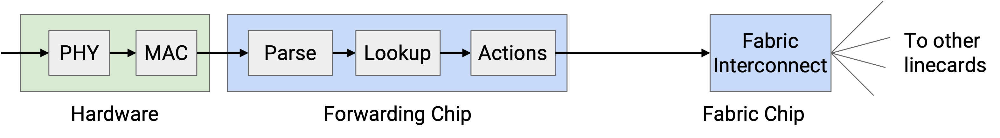
All of this functionality has to happen in a matter of nanoseconds. Even if we somehow did all the processing in one clock cycle, the linecard still has to operate at 0.2 GHz. In practice, all these operations will take more than one clock cycle. Also, we have to do all this processing for every port on the linecard (one forwarding chip supports all the ports).
In order to make these operations fast, forwarding chips are extremely specialized for the limited tasks that they perform (e.g. reading packet header, table lookup). You can’t write a general-purpose program and run it on a forwarding chip. If a packet requires functionality that the forwarding chip can’t support, we can always punt the packet to the general-purpose CPU on the controller card.
Simple operations, like decrementing the TTL, are easy to implement in hardware. More complex operations, like special options, usually require punting to the controller card. In the modern Internet, we avoid special options whenever possible, in order to maximize use of the fast path and avoid punting (if we punted everything, controller cards would be overwhelmed).
The fabric interconnect chips are also similarly specialized. These chips help send packets across the fabric to other linecards. These chips tend to be the most specialized and most high-performance chips in the whole router.
Packet Queuing
TODO
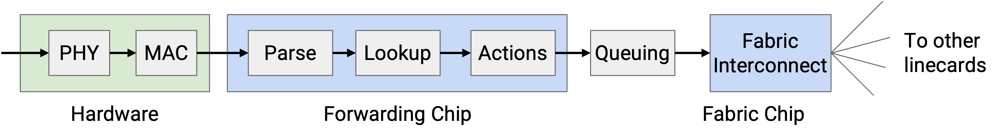
Efficient Forwarding Table Lookup
We now know that routers need to perform lookups in forwarding tables at extremely high rates. One major challenge is that our table entries can contain ranges of IP addresses (192.0.1.0/24) in addition to individual IP addresses. Also, these ranges could be overlapping (a destination could match multiple ranges). How can we make lookups extremely fast?
Ideally, for maximum speed, the forwarding table could contain one entry per destination, with no ranges. Then, we just need to take the destination in the packet, and look up an exact match to learn the next hop.
To achieve this ideal approach, we could expand every range into its individual IP addresses. For example, an entry for the 24-bit prefix 192.0.1.0/24 would be expanded into 256 entries.
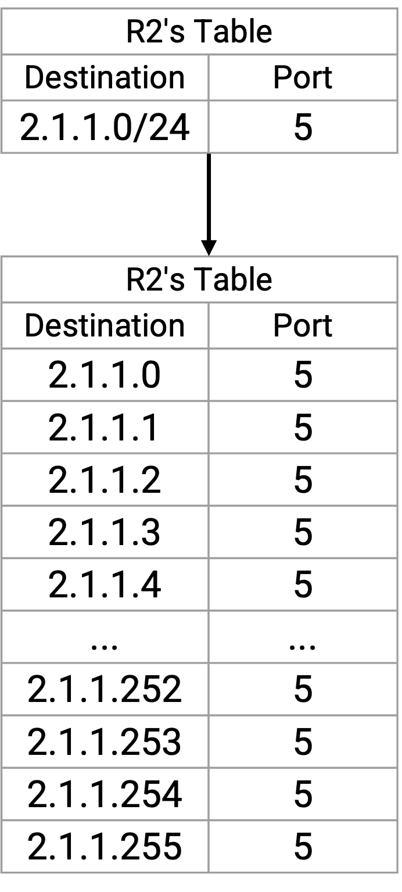
This is space-inefficient (remember, this is being implemented in hardware). Also, if a route changes, we’d have to update tons of entries in the table. Expanding routes isn’t going to work, so we’ll have to work with ranges.
Recall that forwarding table lookup is done using longest prefix matching. If multiple ranges match the destination, we pick the most specific range (most prefix bits fixed). If none of the ranges match, we pick the default route (., 0.0.0.0/32, matches all destinations). If there’s no default route, we drop the packet.
How do we implement longest prefix matching in hardware efficiently?
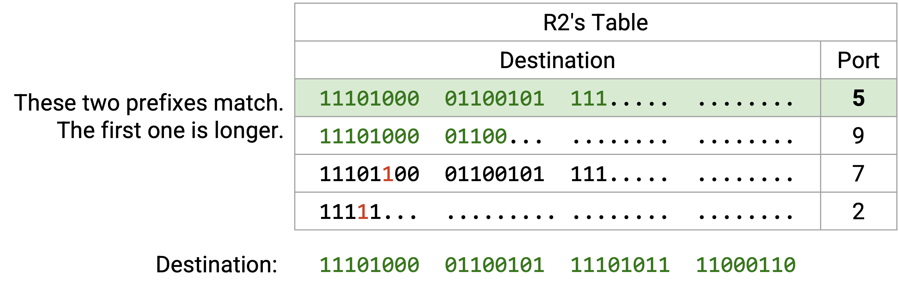
TODO rewrite this to match the diagram
First, for readability, we rewrite all the ranges and the destination in binary. Then, we scan the destination bits, one by one. For the first 21 bits, all four ranges match, so all four ranges are still in play. Then, the 22nd bit is a 1. The first row has a 0 in the 22nd bit, so we can eliminate this row (not a match). The other three rows still match in the first 22 bits, so they’re still in play.
Next, we check the 23rd bit, which is also a 1. The second and third rows have a 0 in the 23rd bit, so we eliminate them (not a match). The fourth row is still a match.
At this point, we can confirm that the fourth row is a full match, because it’s a 23-bit prefix, and all 23 bits match. No further checking of this row is needed.
We continue checking bit-by-bit, eliminating rows that don’t match, and confirming rows that are full matches. Eventually, we have one or more rows that match, and we pick the match with the longest prefix.
If we implemented this naively, then for every bit, we would have to match that bit against every entry in the forwarding table. The asymptotic runtime would scale with the number of entries in the forwarding table. Can we do any better?
Efficient Lookup with Tries
Thinking back to a data structures class (like CS 61B in UC Berkeley), you might remember that tries are a data structure that efficiently store maps where the keys are strings (in this case, bitstrings). Tries store the key-value pairs by writing out the keys one character (bit) at a time, which enables efficient longest prefix matching.
For example, this trie stores a map of words to numbers. If you don’t remember tries, it’s okay.
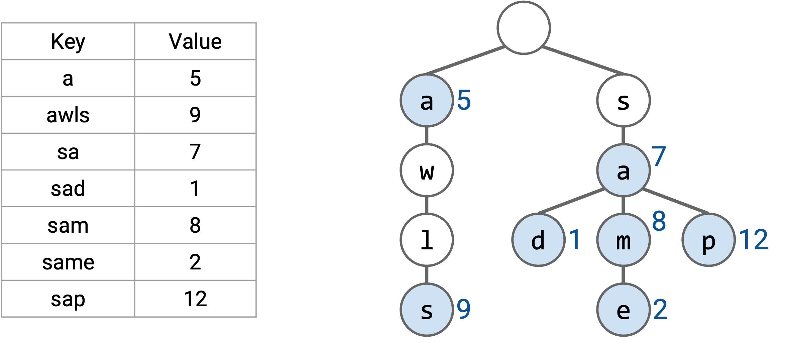
If we want to find the longest prefix, just like before, we read the word one letter at a time. This allows us to trace a path down the tree, from the root to a leaf. Along this path, we look for all prefixes in the table (nodes with colors), and pick the longest prefix.
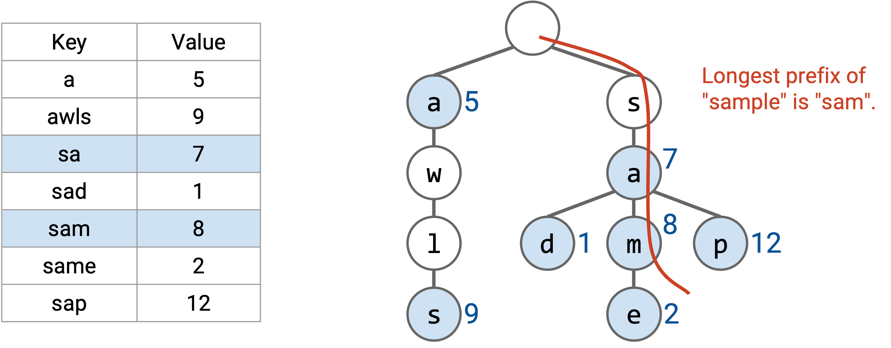
We can use a similar approach for our forwarding table. Each layer of the trie represents one of the digits in the IP address. The zeroth layer is the root (empty string), the first layer represents the first bit, the second layer represents the second bit, etc.
Each node in the trie represents a prefix. For example, the 2-bit prefix 11* is at the second layer of the tree, and the 3-bit prefix 100 is at the third layer of the tree. The trie has all possible 3-bit prefixes. If a prefix is in the forwarding table, at the corresponding node, we write the next hop. If the prefix is not in the forwarding table, we don’t write anything in the node (in the picture, colored white).
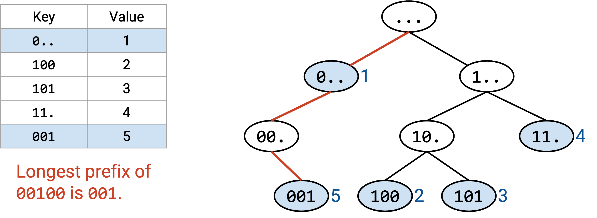
Tracing the path down the tree can be done in constant time. We visit one node per bit of the destination address, and the destination address is always 32 bits (constant). Even if the forwarding table had millions of entries, we’d still pick out 32 nodes.
If there’s no overlapping ranges, every valid prefix corresponds to a leaf node. If ranges are overlapping, a non-leaf node could also be a valid prefix.
As before, we use the destination address to trace a path down the tree. If we fall off the tree, we stop early and pick the longest prefix out of the nodes we visited.
As a slight optimization, as we walk down the tree, we could keep track of the longest prefix match seen so far. This will always be the most recent match, because the prefixes get longer as we move down the tree. If we fall off the tree, we use the longest prefix match (the most recent match we found).
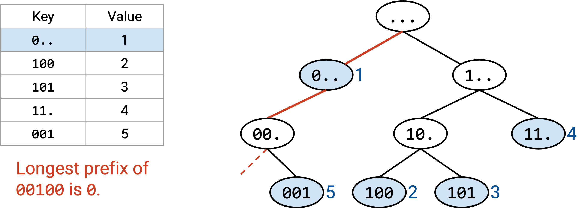
Note that the default route would be stored in the root node (0-length prefix). Our algorithm of walking down the tree ensures that we only use the default route if no other prefixes match.
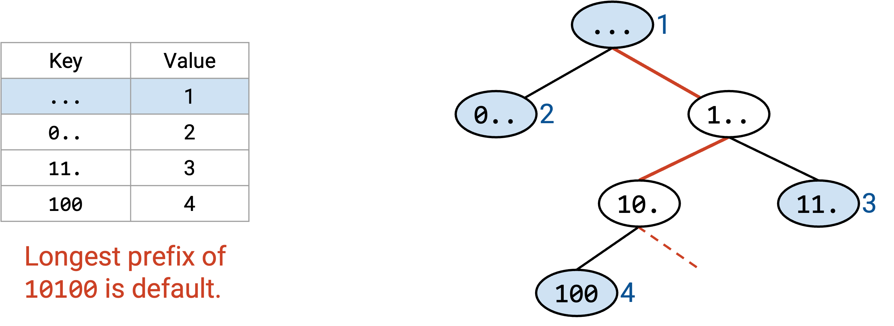
All routers have some form of longest prefix matching functionality, but some use more advanced solutions than others. For example, we could add heuristics and optimizations based on real-world Internet assumptions. Some destinations might be more popular, so we might want to look them up more efficiently. Some ports might be used for more ranges. The modern Internet has some conventions for prefix sizes (e.g. the longest IPv4 prefix for routes to other networks is 24 bits). We could also make optimizations for updating the forwarding tables.